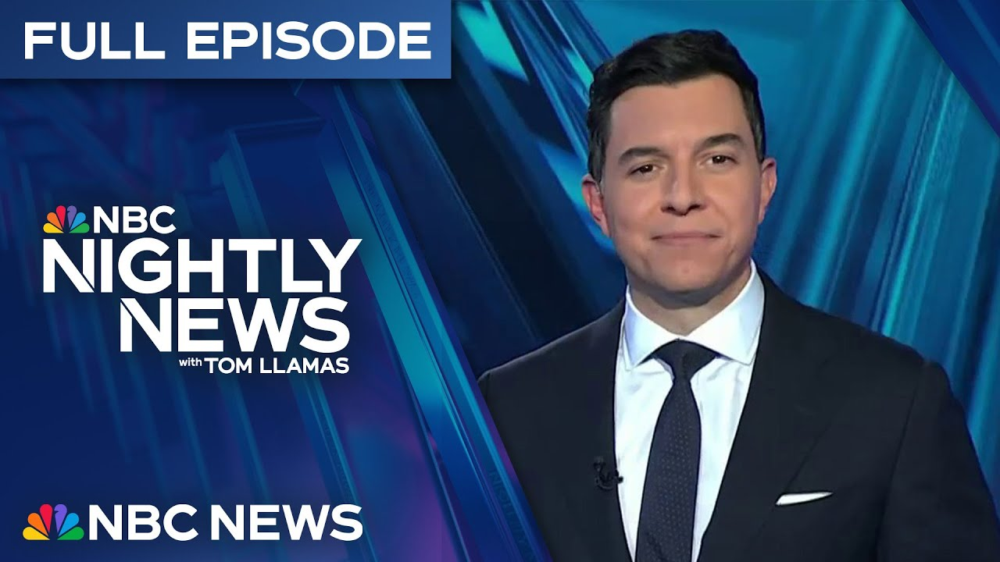

【NBC夜间新闻：2025-06-17 完整版｜特朗普总统考虑对伊朗发动打击｜以色列空袭伊朗军事目标】
Summary: Tonight's coverage includes President Trump considering a U.S. strike on Iran, Israeli airstrikes targeting Iranian military assets, severe weather causing floods and tornadoes across the U.S., and updates on high-profile legal and political cases.
摘要： 今晚的报道包括特朗普总统考虑对伊朗发动美国打击，以色列空袭伊朗军事目标，美国多地遭遇洪水和龙卷风等恶劣天气，以及高调法律和政治案件的最新进展。

⏱️ Estimated Reading Time: 30 min
📚 六级生词 📚 雅思生词 📚 托福生词 📚 专八生词 📚 SAT生词 📚 考研生词 📚 GRE生词 📚 高考生词
Tonight, our new reporting.
今晚，我们的最新报道。
President Trump considering a possible US strike on Iran.
特朗普总统正考虑对伊朗发动可能的美国打击。
The missiles just fired into Tel Aviv moments ago.
导弹刚刚射入特拉维夫。
This as Israeli jets attack from the air, bombing Iranian F-14 fighters and rocket launchers.
与此同时，以色列战机从空中发动袭击，轰炸伊朗的F-14战斗机和火箭发射器。
Our president declaring, "We now have complete and total control of the skies over Iran."
我们的总统宣布：“我们现在完全控制了伊朗上空的制空权。”
And tonight, calling for its quote unconditional surrender.
今晚，他要求伊朗“无条件投降”。
Iranians scrambling to get out the massive traffic jam in Thran.
伊朗人争相逃离德黑兰的大规模交通堵塞。
And now, reports of a cyber attack paralyzing ATMs.
现在有报道称网络攻击导致ATM瘫痪。
Will Israel take out the secretive Fordo nuclear facility buried deep in the earth?
以色列会摧毁深埋地下的秘密福尔多核设施吗？
Also breaking tonight, back here at home, flooding in Pennsylvania, stranding nearly 100 Girl Scouts as millions are under severe weather threats, massive tornadoes ripping across the Midwest, and devastating floods killing seven in West Virginia.
今晚的另一突发新闻：宾夕法尼亚州洪水导致近100名女童子军被困，数百万人面临恶劣天气威胁，中西部遭遇大规模龙卷风，西弗吉尼亚州的毁灭性洪水造成7人死亡。
The last words from one victim to his mother before he was swept away.
一名遇难者被洪水冲走前对母亲说的最后一句话。
Verdict watch tonight.
今晚的判决观察。
Why we may have an idea of how the jury in the Karen Reed case will make up their mind.
我们可能了解卡伦·里德案陪审团如何做出决定的原因。
And the Trump Organization getting into the phone business.
特朗普集团进军手机业务。
Can it really be made in the USA and cost $500?
它真的能在美国制造并售价500美元吗？
The tense moments as a Democratic mayoral candidate is arrested at an immigration court.
民主党市长候选人在移民法庭被捕的紧张时刻。
The wild surveillance video.
疯狂的监控视频。
A dog trying to chase off a bear that broke into its California home.
一只狗试图赶走闯入加州家中的熊。
And portrait of the class of 2025.
2025届毕业生的肖像。
The surprise from a fellow graduate that is picture perfect.
一位毕业生带来的完美惊喜。
Nightly News starts right now.
夜间新闻现在开始。
This is NBC Nightly News with Tom Yamz.
这里是汤姆·亚莫兹主持的NBC夜间新闻。
And good evening.
晚上好。
We are coming on the air with breaking news.
我们带来突发新闻。
Moments ago are Richard Angel and his team capturing this.
片刻前，理查德·安吉尔和他的团队捕捉到这一幕。
A new round of Iranian missiles streaming through the skies of Tel Aviv.
新一轮伊朗导弹划过特拉维夫上空。
This as Israel bombs what is believed to be one of Iran's last F-14 fighter jets.
与此同时，以色列轰炸了据信是伊朗最后一架F-14战斗机。
President Trump jumping into the high stakes freight today, urging quote unconditional surrender from Iran as Israel ups its raid, saying quote, "We now have complete control of the skies over Iran."
特朗普总统今天介入高风险局势，要求伊朗“无条件投降”，同时以色列加大袭击力度，称“我们现在完全控制了伊朗上空的制空权”。
The president considering a possible US strike on Iran.
总统正考虑对伊朗发动可能的美国打击。
That according to multiple current and former administration officials.
这是根据多位现任和前任政府官员的说法。
The questions now about if it's an effort to take out that critical reactor deep in a mountain in order to their nuclear enrichment program.
现在的问题是，这是否是为了摧毁深山中关键反应堆以阻止其核浓缩计划。
President Trump's message coming after he urged Iranians to flee.
特朗普总统在敦促伊朗人逃离后发表了这一声明。
This video showing traffic jams inside of Tran.
这段视频显示了德黑兰市内的交通堵塞。
We have coverage tonight from Israel to Washington.
我们今晚的报道从以色列到华盛顿。
And that's where we begin with Peter Alexander at the White House.
我们从白宫的彼得·亚历山大开始报道。
Tonight, with the conflict between Iran and Israel escalating, President Trump meeting with his national security team inside the situation room is considering a range of options, including a possible US strike on Iran, according to multiple current and former administration officials.
今晚，随着伊朗和以色列冲突升级，特朗普总统在战情室与国家安全团队会面，考虑一系列选项，包括对伊朗发动可能的美国打击，这是根据多位现任和前任政府官员的说法。
It comes as the president is amping up his warnings to Iran, calling for its quote unconditional surrender.
与此同时，总统加大了对伊朗的警告力度，要求其“无条件投降”。
and in a blunt message to Iran's Ayatollah Ali Kmeni saying we know exactly where the so-called Supreme Leader is hiding but adding we are not going to take him out kill at least not for now but we don't want missiles shot at civilians or American soldiers our patience is wearing thin and after abruptly leaving the G7 overnight President Trump is pressing Iran to back down an end a real end not a ceasefire an end giving up entirely that's okay too all of it a significant shift in tone for the president who's repeatedly vowed he will not allow Iran to have a nuclear weapon but for weeks has backed diplomacy urging the Iranians to make a deal now indicating Iran may have missed its window I've been negotiating they should have done the deal I told them do the deal so I don't know I'm not so much in a mood to negotiate President Trump today also declaring we now have complete and total control of the skies over Iran though no US forces or jets are participating in the Isra Israeli strikes.
并以直白的信息告诉伊朗的阿亚图拉阿里·哈梅内伊，称我们确切知道所谓的最高领袖藏身何处，但补充说我们不会除掉他，至少现在不会，但我们不希望导弹射向平民或美国士兵，我们的耐心正在耗尽。特朗普总统在连夜突然离开G7后，敦促伊朗退让，彻底结束，不是停火，而是完全放弃，这也行。这一切标志着总统态度的重大转变，他多次誓言不会允许伊朗拥有核武器，但几周来一直支持外交，敦促伊朗达成协议，现在暗示伊朗可能已经错过了机会。特朗普总统今天还宣布，我们现在完全控制了伊朗上空的制空权，尽管美军或战机没有参与以色列的袭击。
Israel has damaged multiple Iranian nuclear enrichment sites, but is yet to strike the secretive Fordo facility buried deep beneath a mountain.
以色列已摧毁多个伊朗核浓缩设施，但尚未打击深埋山中的秘密福尔多设施。
That would likely require a US war plane and an American 30,000lb bunker busting bomb, which Israel does not possess.
这可能需要美国战机和一枚3万磅的掩体炸弹，以色列并不拥有这种炸弹。
A bomb that will not explode until it's underground.
这种炸弹只有在地下才会爆炸。
The vice president today saying that President Trump may decide he needs to take further action to end Iranian enrichment.
副总统今天表示，特朗普总统可能决定需要采取进一步行动以终止伊朗的核浓缩活动。
later noting the UN nuclear watchdog just determined Iran is not complying with its nuclear non-prololiferation obligations.
随后指出，联合国核监督机构刚刚认定伊朗未遵守其核不扩散义务。
If you want safety, part of safety, and I think all Americans want that, is ensuring that the worst people in the world don't have a nuclear bomb.
如果你想要安全，安全的一部分，我认为所有美国人都希望这一点，就是确保世界上最坏的人没有核弹。
Peter joins us live tonight from the White House.
彼得今晚从白宫为我们带来现场报道。
Peter, just last week, we were talking about efforts to get a deal with Iran.
彼得，就在上周，我们还在讨论与伊朗达成协议的努力。
Now, we're considering joining the war.
现在，我们正在考虑参战。
What's behind the escalation, Tom?
升级的背后是什么，汤姆？
President Trump had long been pushing for negotiations over bombings.
特朗普总统长期以来一直推动谈判而非轰炸。
But in the days before the Israeli strikes, multiple US officials tell NBC News that he became convinced Israel's anxiety was warranted.
但在以色列袭击前几天，多位美国官员告诉NBC新闻，他确信以色列的担忧是有道理的。
And they say he did not want to be the president on whose watch Iran was able to obtain a nuclear weapon.
他们表示，他不想成为伊朗在其任内获得核武器的总统。
Tom, Peter Alexander for us now to the new strikes inside of Iran today by Israel, taking out Iranian fighter jets and missile launchers.
汤姆，彼得·亚历山大为我们报道以色列今天在伊朗境内发动的新袭击，摧毁了伊朗战斗机和导弹发射器。
I want to get right to Richard Angel and his team just witnessing a new Iranian strike on Tel Aviv.
我想直接连线理查德·安吉尔和他的团队，他们刚刚目睹了伊朗对特拉维夫的新一轮袭击。
Richard joins us.
理查德加入我们。
And Richard, tell our viewers what just happened.
理查德，告诉观众刚刚发生了什么。
And right now, Iranian ballistic missiles are coming into Tel Aviv.
现在，伊朗弹道导弹正飞向特拉维夫。
You can see the Israeli air raid systems in operation.
你可以看到以色列空袭防御系统正在运作。
Right there, some of the Iron Dome system going up, making interceptions.
就在那里，部分铁穹系统升空进行拦截。
They are exploding at relatively high altitude just over the center of Tel Aviv.
它们在特拉维夫市中心上空较高处爆炸。
This is the second barrage we've heard just in the last few minutes.
这是我们在过去几分钟内听到的第二轮袭击。
Israel tonight is launching new strikes inside Iran, taking out Iranian F-14 fighter jets while still on the runway and destroying ballistic missile launchers in Western Iran.
以色列今晚在伊朗境内发动新袭击，摧毁了仍在跑道上的伊朗F-14战斗机，并破坏了伊朗西部的弹道导弹发射器。
Israel now declaring the Iranian military leadership is on the run and that it just killed Iran's most senior military commander, General Ali Shadmani, who had replaced another general Israel killed just 4 days ago.
以色列现在宣布伊朗军事领导层正在逃亡，并刚刚击毙了伊朗最高军事指挥官阿里·沙德马尼将军，他接替了以色列四天前击毙的另一位将军。
At a press conference tonight, Israel's foreign minister warning anyone in Iran to quote, "Consider carefully before taking that job."
在今晚的新闻发布会上，以色列外长警告伊朗境内的任何人“在接受这份工作前要慎重考虑”。
And this from Israel's ambassador to the United States.
这是以色列驻美国大使的话。
You're going to see some surprises on Thursday night.
你们将在周四晚上看到一些意外。
on Friday.
周五。
Overnight, images of massive traffic jams as residents rushed out of Tehran.
夜间，德黑兰居民匆忙逃离，导致大规模交通堵塞的画面。
While we've now learned from sources on the ground, potential cyber attacks are hitting Iran's banking system with some ATMs not working.
我们从地面消息来源获悉，潜在的网络攻击正在影响伊朗的银行系统，部分ATM无法使用。
Israel's military operation targeting Iran's nuclear program and its military leaders is now into day five.
以色列针对伊朗核计划和军事领导人的军事行动已进入第五天。
Israel saying it's killed several top Iranian generals and 10 nuclear scientists.
以色列称已击毙多名伊朗高级将领和10名核科学家。
Today, Germany's chancellor praising Israel's operations, saying, "This is the dirty work Israel is doing for all of us."
今天，德国总理赞扬以色列的行动，称“这是以色列为我们所有人做的脏活”。
While China's President Xi saying all parties should work to deescalate.
而中国国家主席习近平表示各方应努力缓和局势。
Iran has launched missiles every day against Israel.
伊朗每天都向以色列发射导弹。
Some seen streaking through the skies out of the window of a passenger jet.
有些导弹从客机窗外划过天空。
Only a few were launched today.
今天只发射了少数导弹。
I I heard this ballistic missile explode around nine o'clock this morning.
我今天早上九点左右听到这枚弹道导弹爆炸。
It caused a a major bang, but nobody was killed or injured here.
它造成了巨大的爆炸声，但这里没有人伤亡。
Instead, a lot of buses.
相反，许多公交车被毁。
This is a bus depot just uh north of Tel Aviv, and the buses were were totally charred.
这是特拉维夫北部的一个公交车站，公交车完全烧焦了。
Israel says Iran has launched 400 ballistic missiles at Israel since Friday.
以色列称自周五以来，伊朗已向以色列发射了400枚弹道导弹。
Air defenses have taken out most of them.
防空系统拦截了大部分导弹。
Richard Engel, NBC News, Tel Aviv.
理查德·恩格尔，NBC新闻，特拉维夫。
And back here at home to the severe weather, flood watches in effect for 21 million people from Pennsylvania to Kansas.
回到国内，恶劣天气导致从宾夕法尼亚州到堪萨斯州的2100万人处于洪水警戒状态。
And in West Virginia, the desperate last words from one man swept away by flood waters.
在西弗吉尼亚州，一名被洪水冲走的男子绝望的遗言。
George releases there.
乔治在那里报道。
Tonight, torrential rain pounding Kansas as severe weather threatens millions.
今晚，暴雨袭击堪萨斯州，恶劣天气威胁数百万人。
The delusion, Pennsylvania, stranding this group of 100 Girl Scouts.
宾夕法尼亚州的洪水导致100名女童子军被困。
First responders helping the troop across a flooded roadway north of Pittsburgh.
急救人员帮助队伍穿过匹兹堡北部被洪水淹没的道路。
Nearly 20 tornado reports from Nebraska to Minnesota.
从内布拉斯加州到明尼苏达州有近20起龙卷风报告。
This massive funnel cloud seen ripping across the Corn Husker state menacing farms and homes for nearly an hour.
这个巨大的漏斗云横扫玉米种植州，威胁农场和家园近一小时。
The Army National Guard on the scene in West Virginia.
西弗吉尼亚州的国民警卫队到场。
The state reeling after major flooding took the lives of seven people including 26-year-old Kylie Shottton and her three-year-old daughter Parker.
该州在大洪水夺去7人生命后陷入困境，其中包括26岁的凯莉·肖顿和她3岁的女儿帕克。
I know.
我知道。
I heard someone yell, "Help!" and I think it was him.
我听到有人喊“救命！”，我想是他。
All I could do is watch helplessly as I couldn't do anything.
我无能为力，只能无助地看着。
In Triadadelphia, Brian Kraton says his 19-year-old son, Travis, was with his mother, Donna.
在特里阿达菲亚，布莱恩·克拉顿说他19岁的儿子特拉维斯和他母亲唐娜在一起。
The water quickly rising, ripping their home from its foundation.
水位迅速上涨，将他们的房屋从地基上冲走。
They were both swept away.
他们都被冲走了。
Donna surviving.
唐娜幸存。
Travis's last words to Donna was swim, mommy, swim.
特拉维斯对唐娜说的最后一句话是“游啊，妈妈，游啊”。
I'm trying, baby.
我在努力，宝贝。
I'm trying.
我在努力。
And then I just kept going underwater.
然后我就一直沉入水下。
Brian says his son died a hero.
布莱恩说他的儿子死得像个英雄。
It was last selfless act.
这是他最后的无私行为。
I just I really want my baby boy back.
我只是真的很想我的宝贝儿子回来。
Tonight, there is so much heartbreak and the threat of rain continues into tomorrow, slowing down the cleanup process in these already hard-hit communities.
今晚，心碎的事情太多，而降雨威胁将持续到明天，减缓这些已经遭受重创的社区的清理进程。
Tom George Solis with those devastating stories out of West Virginia.
汤姆·乔治·索利斯带来西弗吉尼亚州的这些悲惨故事。
Now to the latest on the investigation into the attack on Democratic politicians in Minnesota.
现在是最新关于明尼苏达州民主党政治人物遇袭调查的消息。
Police revealing chilling new details about the murder of Melissa and Mark Hortman.
警方透露了梅丽莎和马克·霍特曼被谋杀的令人不寒而栗的新细节。
Here's Maggie Vespa.
这是玛吉·维斯帕的报道。
Tonight, a solemn procession carrying the bodies of State Representative Melissa Hortman and her husband Mark as Minnesota authorities worked to determine the motive of the suspect they say stalked and killed them at their home early Saturday as part of a targeted attack on lawmakers.
今晚，庄严的队伍抬着州议员梅丽莎·霍特曼和她丈夫马克的遗体，明尼苏达州当局正在确定嫌疑人的动机，据称嫌疑人在周六凌晨跟踪并在他们家中杀害了他们，这是针对立法者的有针对性袭击的一部分。
He's nothing short of a monster.
他简直是个怪物。
Brooklyn Park Police Chief Mark Bruley today sharing new details about the shootout at the Hortman's home, describing this frantic call from a sergeant.
布鲁克林公园警察局长马克·布鲁利今天分享了霍特曼家枪战的新细节，描述了一名警长 frantic 的电话。
She said, "Hey, Chief, here's the deal.
她说：“嘿，长官，情况是这样的。
Senator Hoffman, who lived in Champlain, had been shot.
住在尚普兰的参议员霍夫曼遭到枪击。
His wife had been shot.
他的妻子也中枪了。
We came over to Melissa Hortman's house and Mark, her husband, is dead.
我们赶到梅丽莎·霍特曼家，发现她的丈夫马克已经身亡。
We can't find Melissa.
我们找不到梅丽莎。
We think she might be kidnapped."
我们认为她可能被绑架了。”
And the officers got involved in a shooting with the suspect.
警方与嫌疑人发生交火。
It wasn't until officers went deeper into the home that they found her dead.
直到警方深入房屋才发现她已经死亡。
The family dog, Gilbert, wounded.
家犬吉尔伯特受伤。
He was later euthanized.
后来被实施了安乐死。
It was from here, the Hortman's home, that authorities say Belchure took off on foot, sparking that historic two-day manhunt.
当局称贝尔丘尔从霍特曼家徒步逃离，引发为期两天的历史性追捕。
According to court documents, during that manhunt, authorities found guns, cash, and passports in Belchure's wife's car.
法庭文件显示，追捕期间警方在贝尔丘尔妻子的车内发现枪支、现金和护照。
Can you tell me whether or not she's been cleared in that investigation?
能告诉我她是否已被排除在调查之外吗？
I would say nobody's been cleared in this investigation.
我认为调查中尚未排除任何人嫌疑。
Lawmakers around the country on edge.
全国立法者高度紧张。
Congress today holding an emergency briefing about safety.
国会今日就安全问题举行紧急简报会。
Minnesota Rep. Zach Stevenson knew Melissa Hortman for decades today remembering this advice she once shared.
明尼苏达州众议员扎克·史蒂文森与梅丽莎·霍特曼相识数十年，今日回忆起她曾分享的建议。
You can be strong and kind at the the same time.
你可以同时做到坚强与善良。
Uh and that really was what Melissa Hortman was all about.
这正是梅丽莎·霍特曼的为人。
The Hortman's grown children saying the best way to honor their parents is to do something whether big or small to make our community just a little better.
霍特曼夫妇的成年子女表示，纪念父母的最佳方式是无论大小事，让社区变得更好。
Maggie Vespa, NBC News, Brooklyn Park, Minnesota.
NBC新闻玛吉·维斯帕，明尼苏达州布鲁克林公园报道。
Now to the third day of deliberations in Karen Reed's retrial for the murder of her boyfriend.
凯伦·里德被控谋杀男友的重审案进入陪审团审议第三天。
The jury asking a series of questions today, hinting at possible confusion, even division.
陪审团今日提出一系列问题，暗示可能存在困惑甚至分歧。
Emily Aeta is at the courthouse for us.
艾米丽·艾塔在法院为我们报道。
Emily, what did they ask?
艾米丽，他们问了什么？
Tom, no verdict yet, but we are getting some insight into where juror's heads are asking a question this afternoon.
汤姆，尚未作出裁决，但通过下午的提问我们得以了解陪审团的想法。
If we find not guilty on two charges, but can't agree on one charge, is it a hung jury on all three charges or just one charge?
如果我们对两项指控判定无罪，但对一项指控无法达成一致，这是对所有三项指控的悬置陪审团，还是仅针对一项？
Now, the jury is allowed to come to a unanimous decision on just some charges, but the judge said she would not answer their question today, calling it theoretical.
陪审团可对部分指控达成一致裁决，但法官称今日不会回答这个理论性问题。
The defense raising concerns that confusion over that point could lead to a repeat of last year's mistrial.
辩护方担忧该问题的混淆可能导致去年无效审判重演。
Remember, Reed is accused of hitting her police officer boyfriend with her car, and charged with seconddegree murder, manslaughter while driving drunk, and leaving the scene of a deadly accident.
里德被指控用车撞击其警察男友，面临二级谋杀、酒驾过失杀人和肇事逃逸指控。
A possible sticking point in deliberations.
这可能是审议中的难点。
The jury also asked questions about lesser charges related to drunk driving.
陪审团还就酒驾相关较轻指控提出疑问。
Deliberations, Tom, are set to resume tomorrow morning.
审议将于明早继续，汤姆。
All right, Emily, we thank you for that.
好的，艾米丽，感谢报道。
The Trump Organization, led by the president's sons, Eric and Don Jr., say it will begin selling a smartphone later this summer, designed and built in the United States.
由前总统之子埃里克和小唐纳德领导的特朗普集团宣布，今夏将推出美国设计制造的智能手机。
The cost, $499.
售价499美元。
We asked our Brian Chung to see how that could be done.
我们请布莱恩·钟探究其可行性。
And today, we're here to introduce Trump Mobile.
今天我们在此推出特朗普手机。
The Trump Organization's latest business venture is going mobile.
特朗普集团最新业务进军移动领域。
From highrises to golf courses, drink wear and of course hats now add unlimited talk and text.
从高楼到高尔夫球场，酒具到帽子，现新增无限通话短信服务。
We've partnered with some of the greatest people in the industry to make sure that real Americans can get true value from their mobile carriers.
我们与行业顶尖伙伴合作，确保美国民众获得真正实惠。
The president's sons promoting a mobile plan for $4745 per month.
前总统之子推广月费4745美元套餐。
The price a nod to their father's two terms in office, but also higher than the$25 to $30 competitors charge for comparable services.
该定价致敬其父两届任期，但高于竞争对手25至30美元的同类服务。
We're keeping our data on shore.
我们将数据保留在境内。
Donald Trump Jr. highlighting a St. Louis call center to keep customers data stateside.
小唐纳德强调圣路易斯呼叫中心确保客户数据留在美国。
The Trump Organization also promising a $499 gold smartphone to be released in August dubbed the T1.
特朗普集团还承诺8月推出499美元金色智能手机T1。
The company's website calling it proudly designed and built in the United States.
公司官网称其“自豪地在美国设计制造”。
That statement met with wide range skepticism.
该声明引发广泛质疑。
Where is it truly being made?
它实际在哪里生产？
What is actually being made here in the US and what is being made abroad?
哪些部件真正在美国制造，哪些在海外？
Our questions to the Trump Organization asking the same thing, receiving no response today.
我们向特朗普集团提出相同问题，今日未获回应。
It's a massive amount of undertaking to begin with in Carlsb, California.
加州卡尔斯巴的初创企业规模庞大。
Todd Weaver says this is the only smartphone manufactured in the US.
托德·韦弗称这是唯一美国制造的智能手机。
The Liberty phone made by his company Purism.
其公司Purism生产的Liberty手机。
It's 100% done here.
100%在此完成。
The assembly is 100% done here and the parts are majority American.
组装100%在此完成，部件主要来自美国。
Correct.
没错。
That's right.
正是如此。
Liberty phones cost $2,000.
Liberty手机售价2000美元。
They're also twice as thick as and have half the memory of an iPhone Pro and they don't allow users to download many apps.
其厚度是iPhone Pro两倍，内存仅一半，且限制多数应用下载。
What we do is we provide complete control to the person.
我们提供完全的用户控制权。
But the company says it's sold tens of thousands thanks in part to its security features.
但公司表示凭借安全特性已售出数万台。
The phone, Weaver says, took time to make.
韦弗称该手机耗时良久。
From idea to finished US-made uh phone was was 6 years.
从构想到成品美国制造手机耗时六年。
And so when it comes to the talking point of there are some things you just can't do in the United States, can you build a smartphone in the United States?
当谈及“有些事在美国无法完成”时，能在美国造智能手机吗？
Well, of course, we're obviously proof of that.
我们显然就是证明。
All right.
好的。
And on that point, Brian, you just showed us that made in America smartphone costs $2,000.
布莱恩，你刚展示的美国制造手机售价2000美元。
But the Trump Organization mobile phone is going to cost $4.99.
但特朗普集团手机仅售4.99美元。
Also claiming to be made in America.
同样宣称美国制造。
How's that possible?
这怎么可能？
Yeah, that's a pretty low price point compared to its competitors.
相比竞品这定价极低。
But without knowing where it's made or where its parts come from, it's tough to say how Trump mobile is going to be able to price it at that point.
但不明其产地和部件来源，难以解释特朗普手机如何实现该定价。
We're going to learn a lot more when that phone comes out, which Trump mobile says will happen in August.
待八月手机上市后我们会了解更多。
In August.
八月。
Okay, Brian, we thank you for that.
好的，布莱恩，感谢报道。
Up next, the moment a New York City candidate for mayor was arrested at immigration court.
接下来：纽约市长候选人在移民法庭被捕瞬间。
This is the video why federal officials say they took him into custody.
这是联邦官员公布的逮捕视频。
Why are you arrested?
为什么逮捕我？
We are back now with another high-profile clash between immigration officials and a Democratic politician.
现在报道移民官员与民主党政要的又一高调冲突。
New York City comproller and mayoral candidate Brad Lander was arrested, according to DHS, for allegedly assaulting law enforcement and impeding a federal officer.
国土安全部称，纽约市主计长兼市长候选人布拉德·兰德因涉嫌袭击执法人员和妨碍联邦官员被捕。
Lander says he was holding the arm of a man immigration officials were trying to detain and asking whether agents had a warrant.
兰德称自己当时抓着被移民局拘留者的手臂，询问探员是否有逮捕令。
Food Network star Anne Burrell has died.
美食网明星安妮·伯勒尔去世。
The classically trained chef was known for her big personality and signature platinum blonde hair.
这位科班出身的厨师以鲜明个性和标志性白金发色闻名。
The cause of her death hasn't been released.
死因尚未公布。
She was 55.
终年55岁。
And wild surveillance footage captures the moment one tiny dog went nose tonose with a massive black bear in California.
监控拍下加州小狗与巨大黑熊对峙的惊险瞬间。
The dog barking at the unbothered intruder who continued to look for food before going back outside through the yard.
小狗对着淡定的入侵者吠叫，黑熊继续觅食后穿过院子离开。
The bear was wearing a tracker, meaning it's possibly been caught breaking and entering into homes before.
黑熊佩戴追踪器，表明它可能曾有闯入住宅的前科。
Okay, when we come back, the high school graduation surprise.
稍后带来高中毕业典礼的惊喜时刻。
You could call it a masterpiece.
堪称杰作。
That's next.
接下来为您呈现。
Finally, there's good news tonight for a high school student who shocked her classmates on graduation day.
最后报道一位高中生在毕业典礼上震惊全场的暖心故事。
Sam Brock on how she managed to pull off an unforgettable surprise.
萨姆·布洛克讲述她如何完成这场难忘惊喜。
From all appearances, graduation at Notre Dame Academy on Staten Island looked like a normal ceremony, but saludiatoran Sophia Nielsen, I've prepared a little surprise for all of my fellow graduates, had a trick up her sleeve, where you might say on her canvas.
斯塔滕岛圣母学院的毕业典礼看似平常，但毕业生代表索菲娅·尼尔森准备了惊喜——她袖中藏“画”。
At first, I thought I would just make a big painting of the school's campus.
最初我只想画校园全景。
Then I thought like graduation is not about the buildings, it's about the students.
后来意识到毕业礼关乎学生而非建筑。
The nationally recognized artist sketched classmates on an iPad, then brought them to life in watercolor next to their yearbook pictures.
这位全国知名艺术家先用iPad素描同学，再用水彩将年鉴照片旁的草图绘成活画像。
All 110 of them.
共计110幅。
The process took months and the results uncanny and stealth.
创作耗时数月，成果精妙隐秘。
Even her childhood friend Kaye was in the dark.
连发小凯伊都毫不知情。
So your families are like family.
你们亲如家人？
Yeah, definitely.
当然。
You had no idea this was going on.
你完全不知情？
Not a clue.
毫无察觉。
Right behind my back.
就在我背后进行。
School leaders offering supplies and a stage for something special.
校方提供物资和舞台促成特别时刻。
I wanted everyone to cry.
我想让所有人落泪。
So, you had a very clear goal in all this.
所以目标明确？
Yes.
是的。
You wanted tears.
想要泪水？
Yes.
没错。
What unfolded?
现场如何？
Would you please reach underneath your seats?
请摸一下座椅下方？
There's something plastic taped there.
有塑料膜贴着的物品。
Was a medley of emotions and ultimately a standing ovation.
众人情绪翻涌，最终起立鼓掌。
A graduation sure to stand the test of time for an artist who paints what she feels.
这场毕业礼必将历久弥新，正如艺术家笔随心动。
I knew it was a lot of work, but I did it.
我知道工程浩大，但我做到了。
Sam Brock, NBC News, Staten Island.
NBC新闻萨姆·布洛克，斯塔滕岛报道。
We thank Sam for that.
感谢萨姆。
That's Nightly News for this Tuesday.
以上就是本周二《夜间新闻》全部内容。
Thank you so much for watching.
感谢收看。
I'm Tom Yamos tonight and always, we're here for you.
我是汤姆·亚莫斯，我们始终为您守候。
Good night.
晚安。
We thank you for watching and remember, stay updated on breaking news and top stories on the NBC News app or watch live on our YouTube channel.
感谢观看，请通过NBC新闻应用或YouTube频道直播获取最新突发新闻和头条故事。